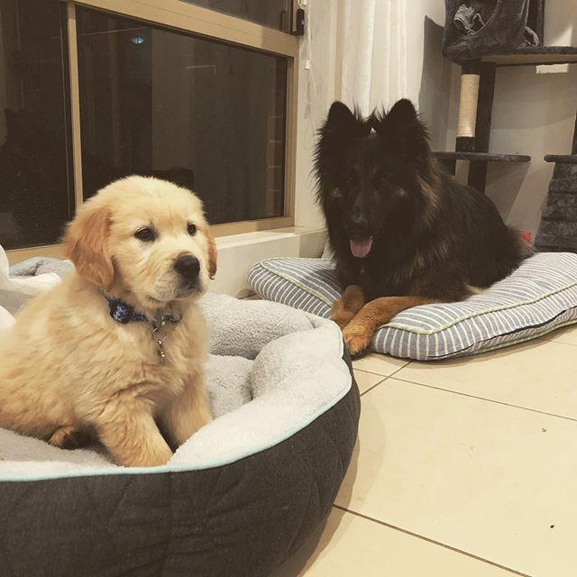

I am an Australian citizen.
I have my VCE certificate, Certificate II in VET Information Technology, Certificate II and III in Warehousing Operations and my First-aid certificate.
My hobbies include cooking, playing video games, I play basketball on Monday nights and mixed netball on Thursday nights, watching NBA and AFL and going to the gym.
I have two dogs, the oldest is a female long haired German shepherd named Storm, the youngest, a male golden retriever named Alby.
I believe my interest in IT began when I first started to study VET IT when I was in year 11 & 12. I enjoyed learning the basics of programming and the history of technology and how far it's come. Recently I went on my first overseas trip with some of my family to Vietnam, My cousin Jesse being one of them. He recently completed his degree in software engineering at RMIT. Listening to him talk about his experiences with his time at university, what he does for work now and his aspects of what the future holds for technology I found to be fascinating, which gave me drive to want to pursue a career in IT.
I chose to come to RMIT for a few reasons. RMIT has quite a high university ranking on Open universities, the highest-ranking for a university that has an Information Technology course. RMIT's Information Technology course also had quite a number of core subjects and electives that I would be interested in completing. Lastly, my cousin Jesse completed his degree in software engineering at RMIT. He highly recommended RMIT explaining his experiences there and what he learnt completing his degree.
I expect I'll learn a great deal about programming, being that I'm still quite new to writing code and only knowing a few basics, learn a great deal about modern technologies such as cloud-based storage, databases, and security, as well as 'soft skills' that are expected in a professional workplace such as communication and teamwork.
